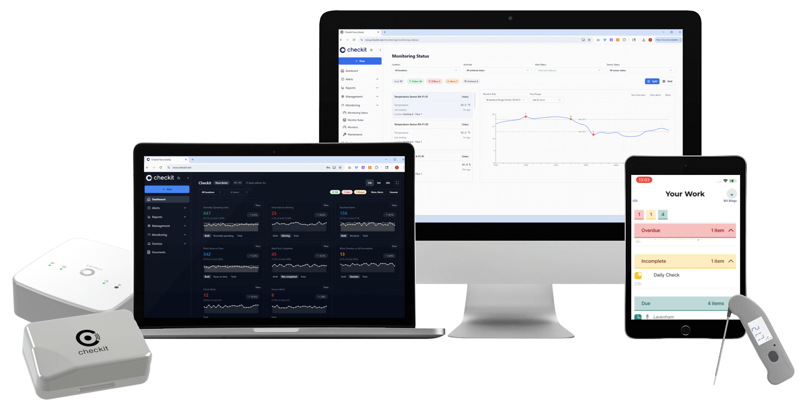

Automate Away the Silent Grind Draining Your Margins
Every time a team member steps away from the till to check a fridge or freezer, a sale slips away, a queue grows, and your best people get a little more fed up. One small interruption, multiplied across every shift and every site, quietly compounds into real money. Here's how to stop it.
Book a DemoMillions in Lost Revenue Start With Small, Simple Choices
The line is out the door. Every barista is on the bar, every till is moving. Then a manual temperature check falls due: a fridge, a freezer, a hot-hold cabinet.
Someone has to stop serving, walk over, take a reading, and write it down. For two or three minutes, that's one fewer person making drinks and taking orders during the busiest stretch of the day.
Stepping away from the counter to run one temperature check looks harmless. It is not. That single choice carries a real revenue impact nobody ever logs, and it repeats all day, at every site.
One Interruption. Four Ways It Costs You.
That single decision ripples across four areas that rarely make it onto a P&L, but all of them land on your bottom line.
The Sale That Never Rang
A team member steps away from the till to check a fridge, at the exact moment a queue is forming. The customer at the back does not wait. They walk. That sale never shows up on any report, because it was never made.
The Queue Gets Longer
Service slows, the line backs up, and the experience frays. Regulars notice. Loyalty in this business is built on speed and consistency, and every interruption quietly chips away at both.
Your Best People Burn Out
Your team came to make great drinks and serve customers, not to abandon a rush to log a fridge temperature on a clipboard. Friction turns into frustration, frustration into turnover. Every leaver means hiring again, retraining again, and weeks before the replacement is fully up to speed.
The Record You Cannot Trust
When the counter is slammed, the check gets skipped, or filled in later from memory. The log looks complete. It is not. The one time it matters, an audit or an incident, the gaps are exactly where the risk was hiding.
The Arithmetic of the Silent Grind
A single interruption looks trivial. But it never happens once. It happens all day, every day, at every site, and it compounds.
One manual check
Two to three minutes away from the counter to walk to a fridge, take a reading, and record it.
Several times a day
Fridges, freezers, hot-holding, display chillers. Multiple checks, every single shift, at every site.
During your busiest minutes
Checks fall due when footfall peaks, the exact moments when every minute on the till is a sale.
Multiplied across the estate
Dozens or hundreds of sites, doing the same thing, every trading day of the year.
Put a number to it
IllustrativeThe Silent Grind
That is revenue that never gets booked, customers who quietly stop coming back, and people who quietly leave. None of it shows up as a line item, which is exactly why it goes unaddressed.
Illustrative figures. Swap in your own check frequency, transaction value, and estate size. The direction never changes.
Checkit Keeps Your People at the Counter
Sensors automate the readings, the app streamlines the checks that remain, and the platform gives head office estate-wide visibility, so your team stays on service and the drip stops.

Why Café Operators Choose Checkit
Built for how high-volume, multi-site hospitality actually operates: fast counters, busy peaks, and teams that change often.
Learn MoreStaff Never Leave the Counter
Wireless sensors take the manual temperature check off your team entirely. During the rush, they stay on service, where the revenue and the experience actually happen.
Records You Can Actually Trust
Readings are captured automatically, around the clock, not from memory at the end of a shift. Every log is timestamped, complete, and audit-ready by default.
Estate-Wide Visibility in One View
Head office sees compliance and equipment status across every location from one dashboard, not after a site visit, not after stock is lost. Live, always.
Built for High-Turnover Teams
Simple enough to pick up in minutes. New starters are productive on day one, critical when café teams change as often as they do.
Automate Your Checks and So Much More
Wireless sensors monitor your critical assets around the clock, so the manual temperature check disappears, and the readings keep coming whether the site is open, closed, or slammed.
Temperature
Under-counter chillers, fridges, freezers, hot-holding, and display cabinets monitored 24/7, with automatic alerts before stock or safety is ever at risk.
Milk & Dairy Chillers
The chillers your entire menu depends on, watched continuously, so a failing unit is caught overnight, not discovered at the morning rush.
Freezers
Frozen stock and pastries protected around the clock, with alerts the moment temperatures start to drift.
Hot Holding
Hot food cabinets monitored against safe thresholds automatically, so no one steps away from service to check them.
Door & Seal
Chiller and freezer doors left ajar, the silent cause of temperature drift and energy waste, flagged the moment it happens.
Humidity
Storage and prep areas where moisture levels quietly affect shelf life and stock quality.
Water & Leak
Under-counter, plant rooms, and back-of-house, with instant alerts on leaks before they close a site for the day.
Energy & Equipment
Fridge compressors, HVAC, and equipment faults captured automatically, before they become a breakdown and a write-off.
Digitise Everything, Making It Fast and Foolproof
Frontline staff complete guided checklists on a tablet or phone, with photo evidence, timestamps, and offline capability built in. Quick enough to fit around a busy counter.
Opening & Closing Routines
Shift-triggeredGuided open and close so every site starts and ends the day to exactly the same standard.
Cleaning & Hygiene
Photo-evidencedSurfaces, machines, and equipment cleaning logged with photo evidence and timestamps.
Allergen & Date Labelling
Natasha's LawAllergen controls and date labelling aligned with food-safety law. Captured, not remembered.
Machine & Equipment Care
DailyDaily descaling, calibration, and maintenance routines that protect drink quality and uptime.
Delivery & Goods-In Checks
Goods-inTemperature and condition checks on every delivery, signed off in seconds at the back door.
Food Prep & Date Codes
HACCPHACCP-aligned prep workflows and date-code discipline, built into the daily routine.
Waste & Stock Logging
Loss preventionRecord waste and date-check failures at the moment they happen, with tagging and trend tracking.
Incident & Near-Miss Reporting
Auto-escalationSpills, accidents, and near-misses captured instantly with photo evidence and automatic escalation.
Health & Safety Checks
ConfigurableFire safety, first aid, and site inspections, all photo-evidenced and configurable per site.
EHO & Audit Readiness
Audit-readyLog inspector visits, findings, and corrective actions in real time with deadlines and evidence.
Unlock Estate-Wide Visibility and Control
Dashboards, reporting, and configuration tools that give head office a single view of compliance and equipment health across every site.
Compliance Dashboards
Live compliance scoring across every site. See which locations are on track and which need attention, at a glance.
Custom Workflow Builder
Create and update checklists centrally, then push them to any site or group of sites. No per-site setup.
Automatic Escalations
Missed checks, breached thresholds, and overdue tasks automatically trigger alerts to the right person at the right level.
Complete Audit Trail
Every check, every reading, every photo, timestamped and stored. Export-ready for EHO visits and audits.
Role-Based Access
Store managers see their store. Area managers see their region. Head office sees the whole estate.
Trend Analysis & Reporting
Spot recurring issues, compare site performance, and make decisions on data instead of anecdotes.
What Stopping the Grind Looks Like
Automate the manual check, and the compounding cost stops at the source.
sensors do it automatically
nights, weekends, overnight
no gaps, no memory, no clipboard
one source of truth
Kickstart Your Implementation Journey
Start where the pain is, the manual temperature check, then expand as you see value. No big-bang rollout, no disruption to service.
Take the Manual Temperature Check Off Your Team First
Place wireless sensors on the fridges, freezers, and hot-holding units. From day one, no one leaves the counter to log a temperature. It happens automatically, 24/7, with alerts the moment anything drifts.
Digitise the Checks That Remain
Move opening, closing, cleaning, and allergen checks onto a tablet. Same routines, now with timestamps and photo evidence instead of a clipboard nobody can find.
Give the Counter Back to Your Customers
With monitoring automated and checks streamlined, staff stay on service through the rush. The queue moves, the experience holds, and the silent revenue drip stops.
Roll Out Across the Estate
Standardise so every site runs the same way. Deploy to 10 sites, then 50, then hundreds. The platform scales without proportional overhead, retraining, or per-site customisation.
See the Whole Estate at a Glance
With data flowing from every location, head office gets live dashboards, automated escalations, and trend analysis, and acts before problems ever surface.
Take the Manual Temperature Check Off Your Team First
Place wireless sensors on the fridges, freezers, and hot-holding units. From day one, no one leaves the counter to log a temperature. It happens automatically, 24/7, with alerts the moment anything drifts.
Digitise the Checks That Remain
Move opening, closing, cleaning, and allergen checks onto a tablet. Same routines, now with timestamps and photo evidence instead of a clipboard nobody can find.
Give the Counter Back to Your Customers
With monitoring automated and checks streamlined, staff stay on service through the rush. The queue moves, the experience holds, and the silent revenue drip stops.
Roll Out Across the Estate
Standardise so every site runs the same way. Deploy to 10 sites, then 50, then hundreds. The platform scales without proportional overhead, retraining, or per-site customisation.
See the Whole Estate at a Glance
With data flowing from every location, head office gets live dashboards, automated escalations, and trend analysis, and acts before problems ever surface.
Stop the Drip. Brew Up the Margin.
Book a 15-minute walkthrough tailored to your estate. No slides, just a live look at how the silent grind disappears.
See It in Action